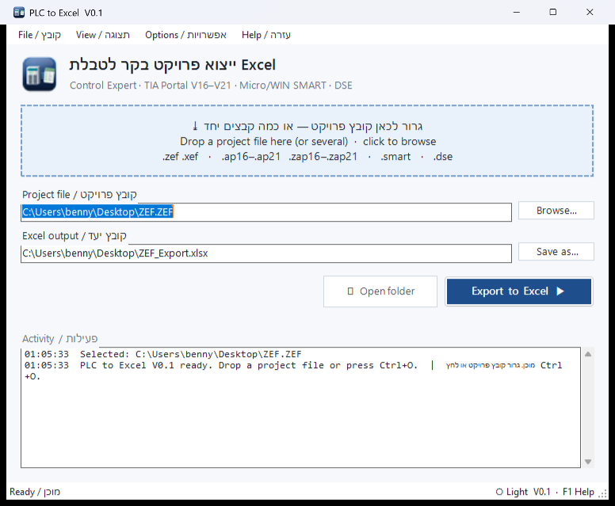
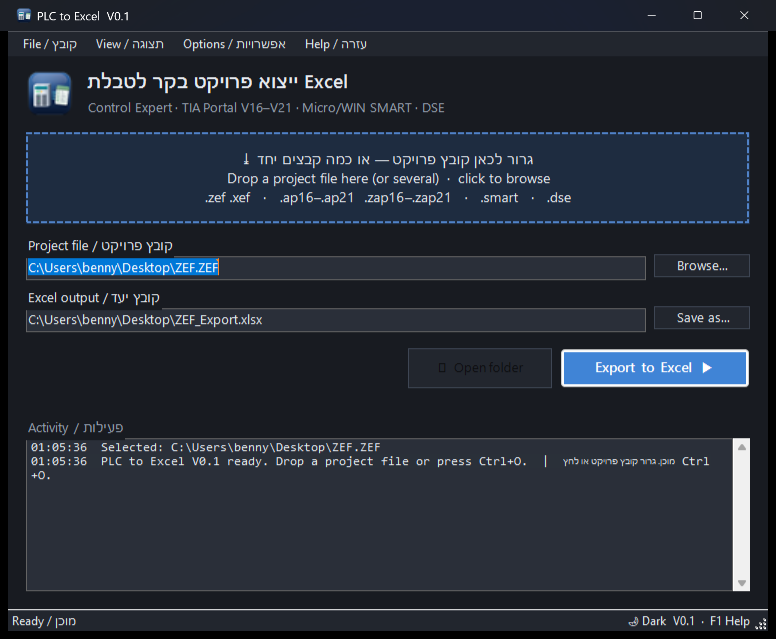

תוכנות נתמכות
| תוכנה | קבצים | מה מיוצא |
|---|---|---|
| Schneider Control Expert (M580, M340) | .zef .xef | מסילות וכרטיסים, IO עם שמות, משתנים, מפת זיכרון, קוד ST/FBD, DDT/DFB, רשת |
| Siemens TIA Portal V16–V21 | .ap16–.ap21 · .zap16–.zap21 · .zip | התקנים, מק"טים, קושחה, IP/PROFINET, IO ממופה לכרטיסים (כולל תחנות מרוחקות), תגיות, בלוקים, קוד SCL ו-LAD |
| Siemens STEP 7-Micro/WIN SMART | .smart | דגם CPU וקושחה, IP, IO עם סמלים, טבלאות סמלים, מפת זיכרון, בלוקים |
| Deep Sea Electronics (DSE) | .dse | כניסות/יציאות ותפקידן, הגנות והתראות, כל הפרמטרים עם משמעות |
יכולות
רשימת IO מלאה
כל ערוץ בכל כרטיס עם שם, כתובת, הערה ואיפה הוא בשימוש בקוד.
גרור ושחרר
גרירת קובץ, כמה קבצים או תיקייה — או לחיצה ימנית ← Export to Excel.
סיסמאות
בקשת סיסמה לפרויקטים ובלוקים מוגנים; אחרי 10 דקות ממשיך אוטומטית עם מה שזמין.
בטוח למקור
קבצי הפרויקט לא משתנים לעולם. כל העיבוד מקומי, שום דבר לא נשלח לרשת.
Excel מקצועי
כותרות מוקפאות, סינון בכל עמודה, גיליון סיכום עם פרטי הבקר.
בהיר / כהה
ערכת נושא בהירה, כהה או לפי Windows. עזרה מלאה בעברית (F1).
צילומי מסך


התקנה
- הורד את PlcToExcel_Setup_V0.1.1.exe והפעל (מעדכן התקנה קיימת).
- אם Windows מציג "Windows protected your PC" — לחץ More info ← Run anyway (הקובץ אינו חתום דיגיטלית).
- בחר שפה, תיקייה ואפשרויות — והתוכנה מוכנה.
קריאת פרויקטי TIA Portal דורשת TIA Portal V21 מותקן במחשב. בשימוש הראשון TIA יבקש אישור גישה — לחץ Yes to all.
גרסאות קודמות
XEF to Excel v1.0 — הכלי הראשון (Control Expert / M580 בלבד).